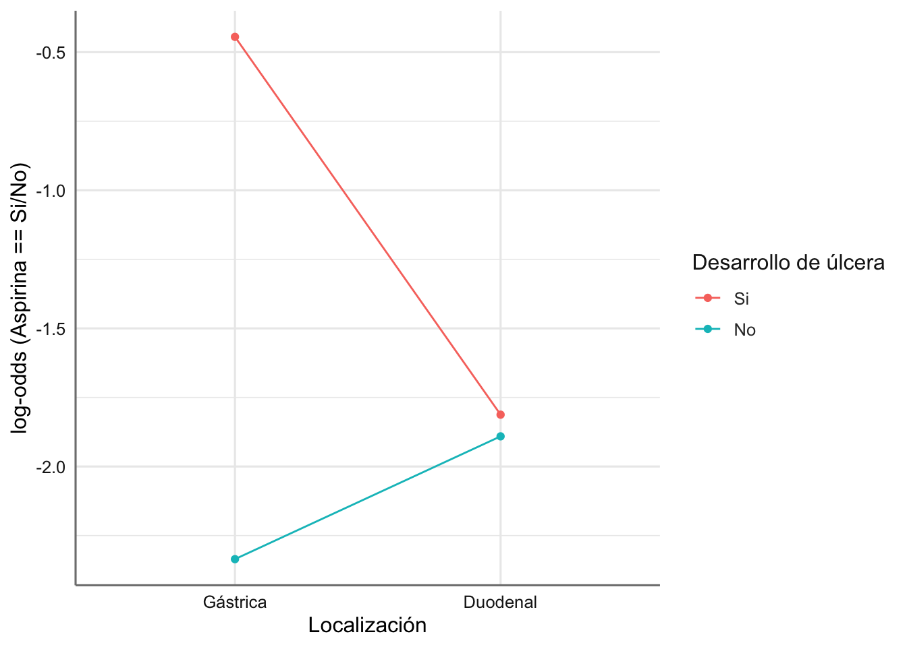
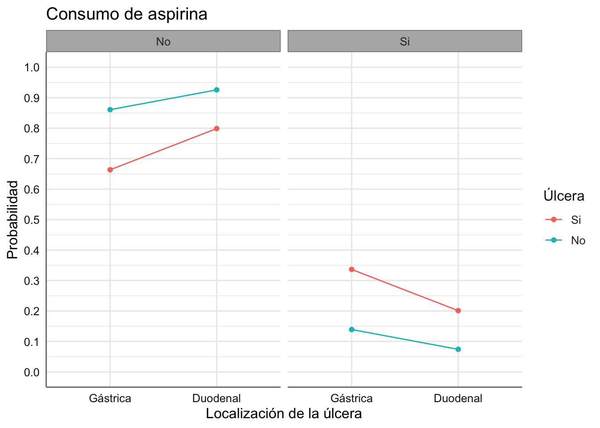
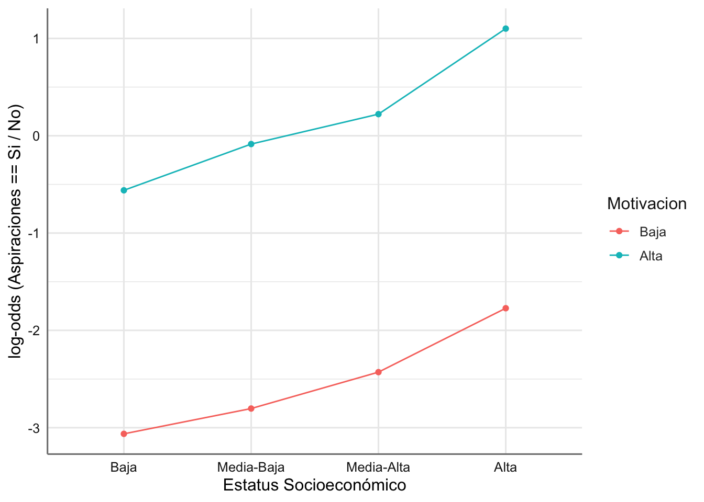
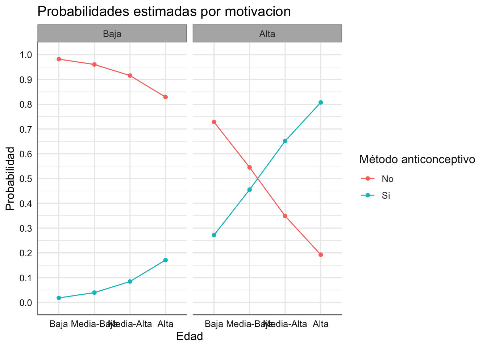
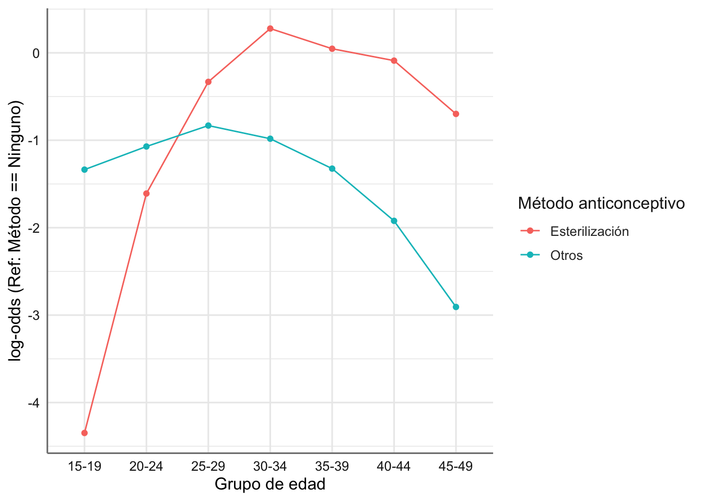
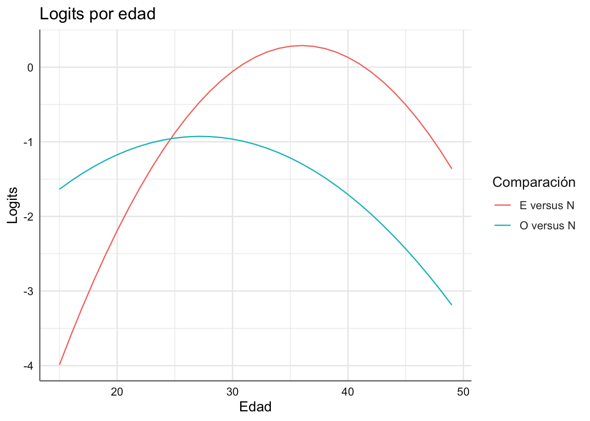
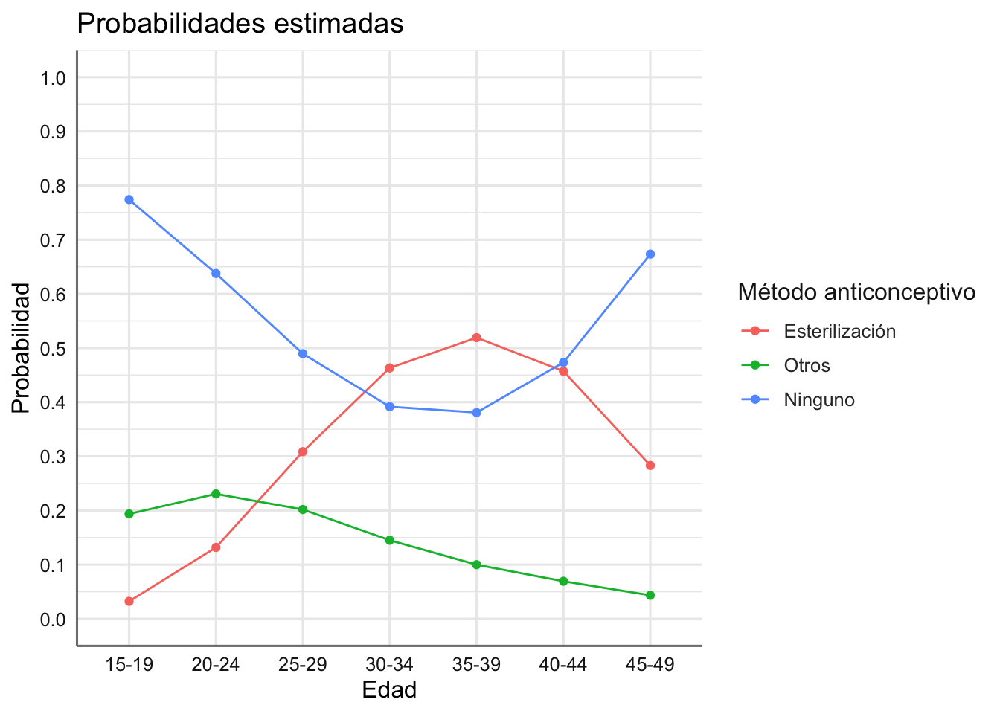
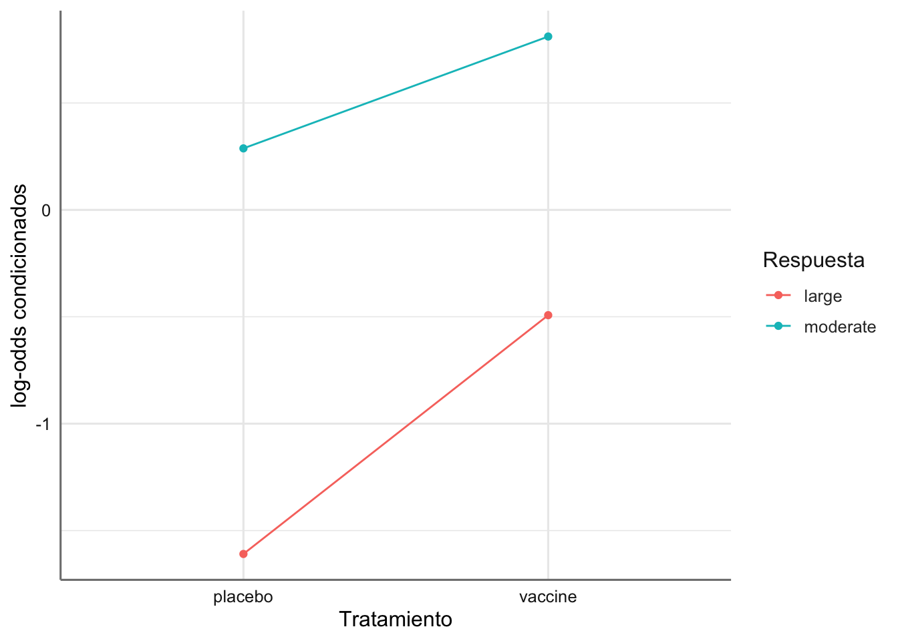
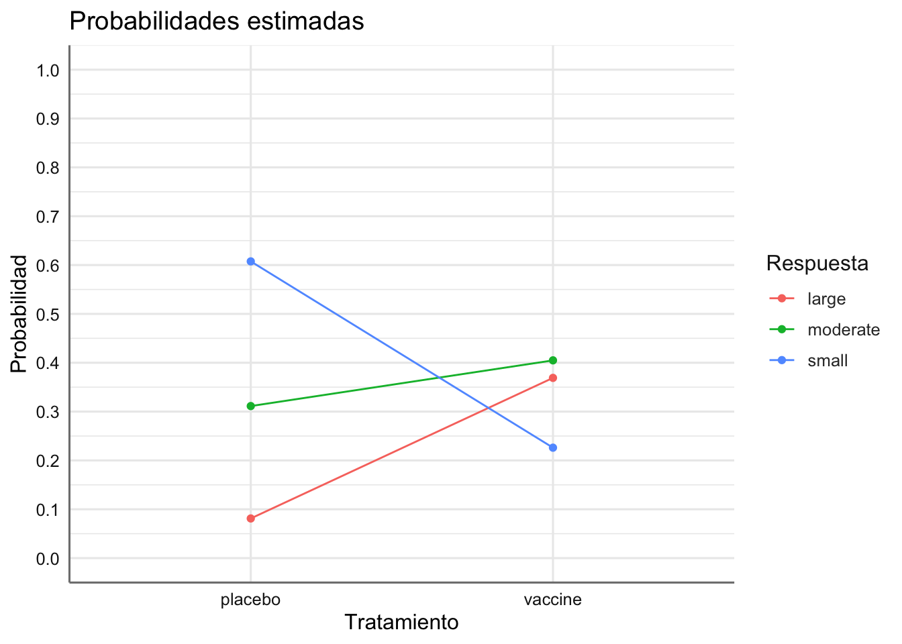
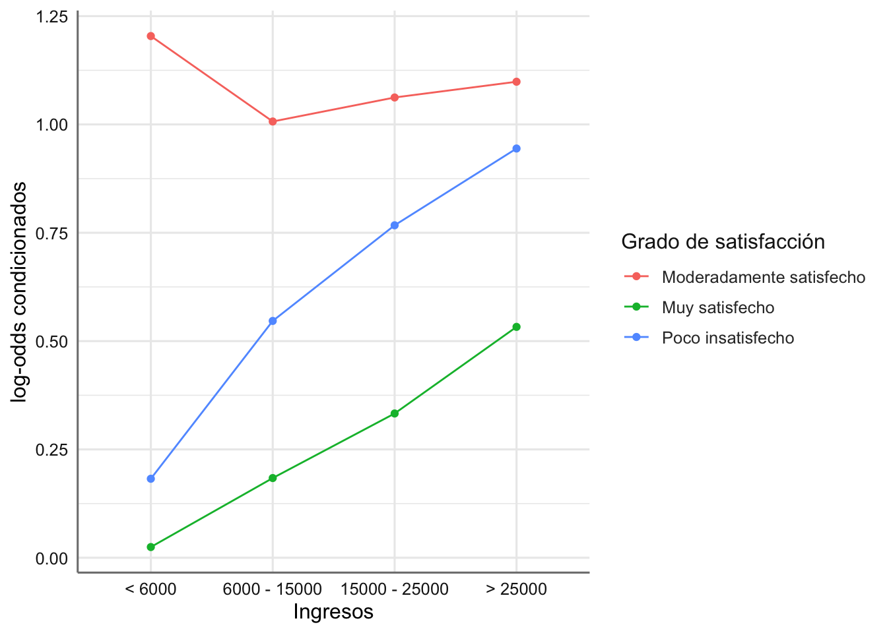

Unidad 14 Estimación
A continuación se presenta el proceso de estimación de los diferentes modelos logit-multinomial que pueden surgir en función de las características de la varaible respuesta y las predictoras. Se detalla cada caso siguiendo las pautas del punto anterior y se analizan los ejemplos correspondientes.
14.1 Respuesta binaria nominal y predictora nominal
Imaginemos que la variable respuesta esta compuesta por dos categorías de carácter nominal (\(i=1, 2\)=. Con la estructura de estimación definida en el punto anterior si la respuesta tiene únicamente dos categorías tendríamos que \(\pi_{1|j} = 1 - \pi_{2|j}\), de forma que tendríamos un único log-odds que se puede expresar como:
\[log\left(\frac{\pi_{2|j}}{\pi_{1|j}}\right) = log\left(\frac{\pi_{2|j}}{1-\pi_{2|j}}\right) = (\alpha_2 -\alpha_1) + (\alpha\beta_{2j} - \alpha\beta_{1j})\]
donde los \(\alpha\) y los \(\alpha\beta\) son los definidos en el punto anterior. Si denotamos por \(\eta_{2|j}\) al \(log\left(\pi_{2|j}/\pi_{1|j}\right)\), a partir de la expresión anterior resulta posible obtener la probabilidad de cada nivel de la respuesta mediante la ecuación:
\[\pi_{2|j} = \frac{exp(\eta_{2|j})}{1+exp(\eta_{2|j})}\]
14.1.1 Datos Aspirina
En primer lugar calculamos y evaluamos los logits empíricos asociados y más tarde realizamos el ajuste y estimación delm modelo. Tomamos como variable respuesta el consumo de aspirina, y usamos como referencia la categroria No podemos obtener los log-odds como:
# Creamos variable con valores de referencia y obtenemos los log-odds asociados
referencia.val <- unlist(dplyr::select(filter(Aspirina, aspirina == "No"),
frecuencia))
# Log-odds
Aspirina <- Aspirina %>%
mutate(referencia = rep(referencia.val, 2),
lodds = log(frecuencia / referencia))
# Gráfico
# Seleccionamos las categorías a representar eliminando la de referencia
# Como la respuesta sólo tiene una categoría no hace falta utilizarla en el gráfico
datos <- filter(Aspirina, aspirina != "No")
ggplot(datos,aes(x = locali, y = lodds, group = ulcera, color = ulcera)) +
geom_point() +
geom_line() +
labs(x = "Localización",
y = "log-odds (Aspirina == Si/No)",
col = "Desarrollo de úlcera") 
Ajustamos un modelo con todas las interacciones dobles, ya que en este caso resulta imposible plantear el modelo con las interacción triple. Este modelo el que ya se planteo en el estudio de independencia.
# Ajuste del modelo sin interacción
fit.aspirina <- glm(frecuencia ~ (locali + ulcera + aspirina)^2,
family = poisson(),
data = Aspirina)Para obtener los logits y probabilidades asociadas a cada categoría de la respuesta extraemos los coeficientes del modelo ajustado. Dado que solo nos interesan los efectos que están relaciondos directamente con la variable respuesta vamos a presentar únicamente dichos valores. Para saber los nombres de los coeficientes del modelo podemos utilizar el código siguiente identificando todos los efectos que están realcionados con la respuesta (efecto principal e interacciones).
En estos modelos utilizamos la función La función tidy para presentar la estimación del modelo selecionando las columnas necesarias.
## # A tibble: 7 x 2
## term estimate
## <chr> <dbl>
## 1 (Intercept) 3.75
## 2 localiDuodenal 0.0698
## 3 ulceraNo 0.321
## 4 aspirinaSi -0.679
## 5 localiDuodenal:ulceraNo -0.106
## 6 localiDuodenal:aspirinaSi -0.700
## 7 ulceraNo:aspirinaSi -1.14Seleccionamos los efectos necesarios para el ajuste de los logits y la estimación de probabilidades. Estos efectos son los relacionados (principales e interacciones) con la variable aspirina.
## # A tibble: 3 x 2
## term estimate
## <chr> <dbl>
## 1 aspirinaSi -0.679
## 2 localiDuodenal:aspirinaSi -0.700
## 3 ulceraNo:aspirinaSi -1.14Dado que ambas variables son de tipo nominal y tomando como referencia la categoría “No” de consumo de aspirina, podemos obtener el logit del consumo de aspirina versus la categoria de referencia para cualquier combinación der categorias de las predictoras mediante:
\[log\left(\frac{\pi_{SI|jk}}{\pi_{No|jk}}\right) = (\alpha_{Si} - \alpha_{No}) + (\theta_{Si,jk} - \theta_{No,jk})\]
donde \(\alpha\) hace referencia al efecto principal asociado con la respuesta (aspirina), y \(\theta\) hace referencia al coeficiente de interacción entre la respuesta y los niveles \(j\) y \(k\) de localización de la úlcera (locali) y tener úlcera (ulcera) respectivamente. Si denotamos por \(A\) al consumo de aspirina, \(L\) la localización de la úlcera, y \(U\) tener o no tener úlcera, para obtener el logit para un sujeto con \(U = No\) y \(L = Duodenal\) tendríamos que:
\[\eta_\text{Si| U = NO; L = Duodenal} = (\alpha_{Si} - \alpha_{No}) + (\theta_{Si,No,Duodenal} - \theta_{No,No,Duodenal})\]
donde \(\alpha_{Si} = -0.679\), \(\alpha_{No} = 0\), y \(\theta_{Si,No,Duodenal}\), \(\theta_{No,No,Duodenal}\) representan las interacciones de la respuesta y predictoras para dicha combinación que vienen dadas por:
\[\begin{array}{ll} \theta_{Si,No,Duodenal} &= \theta_{Si,No} + \theta_{Si,Duodenal} = - 1.14 - 0.70 = - 1.84\\ \theta_{No,No,Duodenal} &= \theta_{No,No} + \theta_{No,Duodenal} = 0 + 0 = 0\\ \end{array}\]
Para la estimación de los logits hya que tener en cuenta las restricciones de identificabilidad \(\alpha_{No} = 0\) y \(\theta_{No,jk} = 0\) para cualquier combinación de \(j\) y \(k\), de forma que:
\[\begin{array}{lll} \eta_\text{[Si| U = No; L = Duodenal]} &= \alpha_{Si} + \theta_{Si,No} + \theta_{Si,Duodenal} &= - 0.679 - 1.84 &= -2.519\\ \eta_\text{[Si| U = No; L = Gástrica]} & = \alpha_{Si} + \theta_{Si,No} + \theta_{Si,Gástrica} &= - 0.679 - 1.14 + 0 &= -1.819\\ \eta_\text{[Si| U = Si; L = Duodenal]} & = \alpha_{Si} + \theta_{Si,Si} + \theta_{Si,Duodenal}&= - 0.679 + 0 - 0.70 &= -1.379\\ \eta_\text{[Si| U = Si; L = Gástrica]} & = \alpha_{Si} + \theta_{Si,Si} + \theta_{Si,Gástrica}&= - 0.679 + 0 + 0 &= - 0.679\\ \end{array}\]
Podemos obtener ahora las probabilidades de consumo de aspirina para cada combinación de las predictoras:
\[\begin{array}{lll} \pi_\text{[Si| U = NO; L = Duodenal]} & = exp(-2.519)/(1+exp(-2.519)) &= 0.0745\\ \pi_\text{[Si| U = NO; L = Gástrica]} & = exp(-1.819)/(1+exp(-1.819)) &= 0.1396\\ \pi_\text{[Si| U = Si; L = Duodenal]} & = exp(-1.379)/(1+exp(-1.379)) &= 0.2012\\ \pi_\text{[Si| U = Si; L = Gástrica]} & = exp(-0.679)/(1+exp(-0.679)) &= 0.3365\\ \end{array}\]
A la vista de estos resultados podemos concluir que la probabilidad de consumir aspirina dado un enfermo de úlcera duodenal es de 0.2012, mientras que para un enfermo de úlcera gástrica dicha probabilidad es de 0.3365. Podemos concluir que la probabilidad del consumo de aspirina es superior en los enfermos con úlcera gástrica que en la duodenal, y mayor en los sujetos enfermos que en los controles.
Las probabilidades anteriores se puden obtener de forma un poco más directa a partir de los valores predichos del modelo.
# Calculamos los conteos predichos del modelo
conteos <- predict(fit.aspirina, type = "response")
# Combinamos los datos originales con los predichos
newdata <- cbind(Aspirina, conteos)
# Calculamos el conteo total por las predictoras
newdata.sum <- newdata %>% group_by(locali, ulcera) %>%
summarise(suma = sum(conteos))
# Calculamos las probabilidades asociadas a cada combinación
newdata <- newdata %>%
left_join(newdata.sum, by = c("locali","ulcera")) %>%
mutate(prob = round(conteos/suma,4))
# Vemos las probabiliddes obtenidas
dplyr::select(newdata,c(locali, ulcera, aspirina, prob))## locali ulcera aspirina prob
## 1 Gástrica Si No 0.6635
## 2 Gástrica No No 0.8608
## 3 Duodenal Si No 0.7988
## 4 Duodenal No No 0.9257
## 5 Gástrica Si Si 0.3365
## 6 Gástrica No Si 0.1392
## 7 Duodenal Si Si 0.2012
## 8 Duodenal No Si 0.0743Podemos representar las probabilidades obtenidas para ver los efectos de la combinacion de predictoras en la respuesta.
ggplot(newdata, aes(x = locali, y = prob, group = ulcera, color = ulcera)) +
geom_point() +
geom_line() +
facet_wrap(~ aspirina) +
labs(title = "Consumo de aspirina",
x = "Localización de la úlcera",
y = "Probabilidad",
col = "Úlcera") +
scale_y_continuous(breaks = seq(0, 1, by = 0.1), limits = c(0, 1))
14.2 Respuesta multinomial nominal y predictora nominal
Cuando tenemos más de dos categorías el procedimiento es bastante similar. En este caso tomamos la última categoria \(I\) como referencia, de forma que los log-odds se pueden expresar como:
\[log\left(\frac{\pi_{i|j}}{\pi_{I|j}}\right) = \eta_{i|j} = (\alpha_i -\alpha_I) + (\alpha\beta_{ij} - \alpha\beta_{Ij})\]
A partir del logit anterior para cada categoría \(i\),podemos obtener la probabilidad condicionada de dicha categoría \(i\) como:
\[\pi_{i|j} = \frac{exp(\eta_{i|j})}{\sum_{l=1}^I exp(\eta_{l|j})}\]
Puesto que \(exp(\eta_{I|j}) = 1\) dicha probabilidad se puede expresar como:
\[\pi_{i|j} = \frac{exp(\eta_{i|j})}{1 + \sum_{l \neq I} exp(\eta_{l|j})}\]
Esta expresión es similar a la de dos categorías salvo por la modificación del denominador, donde se incluyen los predictores, \(\eta\), asociados a todas las categorías de la respuesta.
14.3 Respuesta nominal, predictora ordinal
Esta situación es miliar a la anterior salvo por el carácter ordinal de la predictora. Para estimar dichos modelos debemos incluir una variable ficticia (\(S\)) que contendrá los scores asociados con las categorías de la predictora. Si \(v_1=1, v_2=2,...,v_J=J\) denota a los scores asociados con la varaible ordinal, el logit asociado a esta situación se puede expresar mediante:
\[log\left(\frac{\pi_{i|j}}{\pi_{I|j}}\right) = \eta_{i|j} = (\alpha_i -\alpha_I) + (\alpha\beta_{ij} - \alpha\beta_{Ij})v_j\]
donde las interacciones entre la respuesta y la predictora se modifican a través del score definido, para introducir el efecto ordinal entre las comninaciones, de forma que los cocientes de probabilidades se obtienen como
\[\frac{\pi_{i|j}}{\pi_{I|j}} = exp(\eta_{i|j}) = exp\{(\alpha_i -\alpha_I) + (\alpha\beta_{ij} - \alpha\beta_{Ij})v_j\}\]
de forma que la probabilidad de una categoría \(i\) viene dada por:
\[\pi_{i|j} = \frac{exp(\eta_{i|j})}{1 + \sum_{l \neq I} exp(\eta_{l|j})}\]
14.3.1 Datos Aspiraciones universitarias
Si tomamos como variable respuesta las aspiraciones universitarias en función del estatus económico y de la motivación familiar, y usamos como referencia la categoría No podemos obtener el log-odd de la categoría Si mediante:
# Creamos variable con valores de referencia y obtenemos los log-odds asociados
referencia.val <- unlist(dplyr::select(filter(Aspiraciones, aspiraciones == "No"),
frecuencia))
Aspiraciones <- Aspiraciones %>%
mutate(referencia = rep(referencia.val, 2),
lodds = log(frecuencia / referencia))
# Gráfico
# Seleccionamos las categorías a representar eliminando la de referencia
# Como la respuesta sólo tiene una categoría no hace falta utilizarla en el gráfico
datos <- filter(Aspiraciones, aspiraciones != "No")
ggplot(datos,aes(x = estatus, y = lodds, group = motivacion, color = motivacion)) +
geom_point() +
geom_line() +
labs(x = "Estatus Socioeconómico",
y = "log-odds (Aspiraciones == Si / No)",
col = "Motivacion")
Se observa una tendencia creciente (puede incluso que no lineal) conforme aumenta el estatus económico, que va relacionada directamente con una motivación más alta en el entorno familiar (comportamiento casi paralelo para ambas motivaciones).
Para el ajuste de este modelo debemos considerar los scores asociados a cada una de las predictoras ordinales (estatus.num y motivacion.num) tal y como los definimos al presentar este banco de datos. En primer lugar ajustamos el modelo para estudiar asociación eliminando la interacción de orden 3.
# Ajuste del modelo sin interacción triple
fit.aspiraciones.aso <- glm(frecuencia ~ (estatus + motivacion + aspiraciones)^2,
family = poisson(),
data = Aspiraciones)
# Bondad del asjute del modelo
1-pchisq(fit.aspiraciones.aso$deviance, fit.aspiraciones.aso$df.residual)## [1] 0.664965No podemos rechazar la interacción triple. Ajustamos un nuevo modelo eliminando la interacción doble entre estatus y motivacion dado que los prefiles de los logits parecían paralelos.
# Ajuste del modelo sin interacción triple
fit.aspiraciones.aso2 <- glm(frecuencia ~ estatus + motivacion + aspiraciones + estatus:aspiraciones + motivacion:aspiraciones,
family = poisson(),
data = Aspiraciones)
# Bondad del ajuste
1-pchisq(fit.aspiraciones.aso2$deviance, fit.aspiraciones.aso2$df.residual)## [1] 0# Comapramos con el modelo anterior
anova(fit.aspiraciones.aso2, fit.aspiraciones.aso, test ="Chisq")## Analysis of Deviance Table
##
## Model 1: frecuencia ~ estatus + motivacion + aspiraciones + estatus:aspiraciones +
## motivacion:aspiraciones
## Model 2: frecuencia ~ (estatus + motivacion + aspiraciones)^2
## Resid. Df Resid. Dev Df Deviance Pr(>Chi)
## 1 6 298.485
## 2 3 1.575 3 296.91 < 2.2e-16 ***
## ---
## Signif. codes: 0 '***' 0.001 '**' 0.01 '*' 0.05 '.' 0.1 ' ' 1El p-valor resulta significativo dando indicaciones de que la interacción estatus:motivacion no es relevante pero este modelo si que es distinto del modelo saturado. Ajustamos este modelo teniendo en cuenta los scores:
# Debemos incluir el efecto de las predictoras como factor principal
# para mantener la estructura del modelo
fit.aspiraciones <- glm(frecuencia ~ estatus + motivacion + aspiraciones + aspiraciones*(estatus.num + motivacion.num),
family = poisson(),
data = Aspiraciones)Obtenemos la tabla de estimación para el modelo:
## # A tibble: 10 x 2
## term estimate
## <chr> <dbl>
## 1 (Intercept) 6.42
## 2 estatusMedia-Baja -0.0318
## 3 estatusMedia-Alta -0.307
## 4 estatusAlta -0.780
## 5 motivacionAlta -0.482
## 6 aspiracionesSi -7.81
## 7 estatus.num NA
## 8 motivacion.num NA
## 9 aspiracionesSi:estatus.num 0.806
## 10 aspiracionesSi:motivacion.num 3.01Seleccionamos los efectos necesarios para el ajuste de los logits y la estimación de probabilidades. Estos efectos son los relacionados (principales e interacciones) con la variable aspiraciones.
## # A tibble: 3 x 2
## term estimate
## <chr> <dbl>
## 1 aspiracionesSi -7.81
## 2 estatus.num NA
## 3 motivacion.num NACon una variable respuesta nominal y una predictora ordinal la ecuació del logit (tomando la categoría No como referencia) se pueden obtener de forma sencilla a partir de las ecuaciones descritas anteriormente. La expresión del logit en función de los niveles de las predictoras viene dada por:
\[log\left(\frac{\pi_{\text{Si,jk}}}{\pi_{\text{No,jk}}}\right) = (\alpha_{\text{Si}} - \alpha_{\text{No}}) + (\theta_{Si,j} - \theta_{No,j}) v_j + (\gamma_{Si,k} - \gamma_{No,k}) w_k \\ = \alpha_{\text{Si}} + \theta_{Si,j} v_j + \gamma_{Si,k} w_k\]
donde los \(\alpha\) representan los efectos principales de aspiraciones, \(\theta\) los efectos de las interacciones entre aspiraciones y estatus, \(\gamma\) los efectos de las interacciones entre aspiraciones y motivacion, los \(v_j\) son los scores de estatus, y los \(\gamma_k\) son los scores de motivacion. Sustituyendo tendríamos:
\[log\left(\frac{\pi_{\text{Si,jk}}}{\pi_{\text{No,jk}}}\right) = - 7.81 + 0.806 v_j + 3.01 w_k\]
Dando valores a \(v_j\) (de 1 a 4) y a \(w_k\) (de 1 a 2) podemos obtener el logit asociado con la variable respuesta. En este caso pasamos directamente a estimar las probabilidades de cada combinación.
# Calculamos los conteos predichos del modelo
conteos <- predict(fit.aspiraciones, type = "response")
# Combinamos los datos originales con los predichos
newdata <- cbind(Aspiraciones, conteos)
# Calculamos el conteo total por las predictoras
newdata.sum <- newdata %>% group_by(estatus, motivacion) %>%
summarise(suma = sum(conteos))
# Calculamos las probabilidades asociadas a cada combinación
newdata <- newdata %>%
left_join(newdata.sum, by = c("estatus", "motivacion")) %>%
mutate(prob = round(conteos/suma,4))
# Vemos las probabiliddes obtenidas
dplyr::select(newdata,c(estatus, motivacion, aspiraciones, prob))## estatus motivacion aspiraciones prob
## 1 Baja Baja No 0.9819
## 2 Baja Alta No 0.7282
## 3 Media-Baja Baja No 0.9604
## 4 Media-Baja Alta No 0.5448
## 5 Media-Alta Baja No 0.9156
## 6 Media-Alta Alta No 0.3484
## 7 Alta Baja No 0.8289
## 8 Alta Alta No 0.1928
## 9 Baja Baja Si 0.0181
## 10 Baja Alta Si 0.2718
## 11 Media-Baja Baja Si 0.0396
## 12 Media-Baja Alta Si 0.4552
## 13 Media-Alta Baja Si 0.0844
## 14 Media-Alta Alta Si 0.6516
## 15 Alta Baja Si 0.1711
## 16 Alta Alta Si 0.8072Podemos representar las probabilidades obtenidas para ver los efectos de la combinacion de predictoras en la respuesta.
ggplot(newdata, aes(x = estatus, y = prob, group = aspiraciones, color = aspiraciones)) +
geom_point() +
geom_line() +
facet_wrap(~ motivacion) +
labs(title = "Probabilidades estimadas por motivacion",
x = "Edad",
y = "Probabilidad",
col = "Método anticonceptivo") +
scale_y_continuous(breaks = seq(0, 1, by = 0.1), limits = c(0, 1))
14.3.2 Datos de Contraceptivos
Si tomamos como variable respuesta el método anticonceptivo utilizado, y usamos como referencia la categroria Ninguno podemos obtener los log-odds de la otras dos categorías como:
# Creamos variable con valores de referencia y obtenemos los log-odds asociados
referencia.val <- unlist(dplyr::select(filter(Contraceptivos, metodo == "Ninguno"), frecuencia))
Contraceptivos <- Contraceptivos %>%
mutate(referencia = rep(referencia.val, 3),
lodds = log(frecuencia / referencia))
# Gráfico
# Seleccionamos las categorías a representar eliminando la de referencia
# Como la respuesta sólo tiene una categoría no hace falta utilizarla en el gráfico
datos <- filter(Contraceptivos, metodo != "Ninguno")
ggplot(datos,aes(x = edad, y = lodds, group = metodo, color = metodo)) +
geom_point() +
geom_line() +
labs(x = "Grupo de edad",
y = "log-odds (Ref: Método == Ninguno)",
col = "Método anticonceptivo") 
Se observan claramente tendencias cuadráticas distintas para cada método asociadas con el grupo de edad considerado. Aprovecharemos el carácter ordinal de dicha variable para incluir una nueva variable que contenga la marca de clase de cada grupo de edad (score), que nos permita ajustar el modelo cuadrático con edad.
Dado que sólo tenemos una predictora vamos a ajustar un modelo sólo con efectos principales. Estudiamos la bondad del ajuste de dicho modelo para conocer el patrón de asociación entre las variables. Si desechamos la interacción doble concluiríamos que no existe asociación entre edad y método contraceptivo. En caso contrario deberíamos establecer el modelo de asociación entre ambas variables. El gráfico de log-odds muestra cierto grado de asociación de tipo cuadrático con la edad. Se debe explorar la posibilidd de un modelo de interacción con la variable de scores de edad asumiendo un modelo cuadrático.
# Ajuste del modelo sin interacción
fit.contraceptivos.aso <- glm(frecuencia ~ edad + metodo,
family = poisson(),
data = Contraceptivos)
# Bondad del asjute del modelo
1-pchisq(fit.contraceptivos.aso$deviance, fit.contraceptivos.aso$df.residual)## [1] 0Rechazamos la hipótesis de independencia. Ajustamos el modelo de interacción cuadrático con los scores de la variable edad que ya fijamos en la presentación del banco de datos (punto medio de los intervalos de edad). En este modelo incluimos la edad como factor principal, y los scores de la edad en interacción con la variable método anticonceptivo.
# Ajuste del modelo con efecto cuadrático en edad
# Debemos incluir el efecto edad como factor principal
# para mantener la estructura del modelo
fit.contraceptivos <- glm(frecuencia ~ edad + metodo*(edad.num + I(edad.num^2)),
family = poisson(),
data = Contraceptivos)Comparamos los dos modelos obtenidos para validar la inclusión de la variable de scores de edad
## Analysis of Deviance Table
##
## Model 1: frecuencia ~ edad + metodo
## Model 2: frecuencia ~ edad + metodo * (edad.num + I(edad.num^2))
## Resid. Df Resid. Dev Df Deviance Pr(>Chi)
## 1 12 521.10
## 2 8 20.47 4 500.63 < 2.2e-16 ***
## ---
## Signif. codes: 0 '***' 0.001 '**' 0.01 '*' 0.05 '.' 0.1 ' ' 1Dado que el p-valor resulta significativo podemos conluir que ambos modelos son distintos.
Obtenemos la tabla de estimación para el modelo:
## # A tibble: 15 x 2
## term estimate
## <chr> <dbl>
## 1 (Intercept) 2.26
## 2 edad20-24 2.14
## 3 edad25-29 3.04
## 4 edad30-34 3.28
## 5 edad35-39 3.16
## 6 edad40-44 2.78
## 7 edad45-49 2.13
## 8 metodoOtros 7.85
## 9 metodoNinguno 12.3
## 10 edad.num NA
## 11 I(edad.num^2) NA
## 12 metodoOtros:edad.num -0.441
## 13 metodoNinguno:edad.num -0.700
## 14 metodoOtros:I(edad.num^2) 0.00497
## 15 metodoNinguno:I(edad.num^2) 0.00973Seleccionamos los efectos necesarios para el ajuste de los logits y la estimación de probabilidades. Estos efectos son los relacionados (principales e interacciones) con la variable metodo.
## # A tibble: 6 x 2
## term estimate
## <chr> <dbl>
## 1 metodoOtros 7.85
## 2 metodoNinguno 12.3
## 3 edad.num NA
## 4 I(edad.num^2) NA
## 5 metodoOtros:edad.num -0.441
## 6 metodoNinguno:edad.num -0.700Con una variable respuesta nominal y una predictora ordinal la ecuació del logit (tomando la categoría Ninguno como referencia) se pueden obtener de forma sencilla a partir de las ecuaciones descritas anteriormente. Para simplificar las expresiones utilizamos la codificación de categorias de la variable metodo: Esterilizacion = E, Ninguno = N, y Otros = O. Las expresiones de los logits en función de la edad son:
\[log\left(\frac{\pi_{\text{E,j}}}{\pi_{\text{N,j}}}\right) = (\alpha_{\text{E}} - \alpha_{\text{N}}) + (\theta_{E,j} - \theta_{N,j}) v_j + (\theta^2_{E,j} - \theta^2_{N,j}) v^2_j\]
\[log\left(\frac{\pi_{\text{O,j}}}{\pi_{\text{N,j}}}\right) = (\alpha_{\text{O}} - \alpha_{\text{N}}) + (\theta_{O,j} - \theta_{N,j}) v_j + (\theta^2_{O,j} - \theta^2_{N,j}) v^2_j\]
donde los \(\alpha\) representan los efectos principales, \(\theta\) los efectos de las interacciones con el efecto lineal del score, \(\theta^2\) los efectos de las interacciones con el efecto cuadrático del score, y los \(v_j\) son los scores de la edad. Sustituyendo tendríamos:
\[log\left(\frac{\pi_{\text{E,j}}}{\pi_{\text{N,j}}}\right) = (0 - 12.30) + (0 + 0.70) v_j + (0 - 0.00973) v^2_j \\ = - 12.30 + 0.70 v_j - 0.00973 v^2_j\]
\[log\left(\frac{\pi_{\text{O,j}}}{\pi_{\text{N,j}}}\right) = (7.85 - 12.30) + (-0.441 + 0.70) v_j + (0.00497 - 0.00973) v^2_j \\ = - 4.45 + 0.259 v_j - 0.00476 v^2_j\]
Podemos representar los logits obtenidos en función de la edad:
# Secuencia de edad
edadsec <- seq(15,49,1)
# Valores logit comparada con la de referencia
EvsN <- - 12.30 + 0.70*edadsec - 0.00973*edadsec^2
OvsN <- - 4.45 + 0.259*edadsec - 0.00476*edadsec^2
# Configuración de datos para logits
edad <- rep(edadsec,2)
combinacion <- c(rep("E versus N",length(edadsec)), rep("O versus N",length(edadsec)))
logits <- c(EvsN, OvsN)
datoscom <- data.frame(edad, combinacion, logits)
# Gráfico
ggplot(datoscom, aes(x = edad, y = logits, group = combinacion, color = combinacion)) +
geom_line() +
labs(title = "Logits por edad",
y = "Logits",
x = "Edad",
col = "Comparación") 
Los logits estimados reproducen el comportamiento observado en los logits empíricos.
Por último obtnemos las probabilidades de cada combinación, que en este caso su evolución como función de la edad. En lugar de evaluar los logits utilizaremos la función predict para evaluar dichas probabildiades y representarlas gráficamente.
# Calculamos los conteos predichos del modelo
conteos <- predict(fit.contraceptivos, type = "response")
# Combinamos los datos originales con los predichos
newdata <- cbind(Contraceptivos, conteos)
# Calculamos el conteo total por las predictoras
newdata.sum <- newdata %>% group_by(edad) %>%
summarise(suma = sum(conteos))
# Calculamos las probabilidades asociadas a cada combinación
newdata <- newdata %>%
left_join(newdata.sum, by = "edad") %>%
mutate(prob = round(conteos/suma,4))
# Vemos las probabiliddes obtenidas
dplyr::select(newdata,c(edad, metodo, prob))## edad metodo prob
## 1 15-19 Esterilización 0.0322
## 2 20-24 Esterilización 0.1318
## 3 25-29 Esterilización 0.3086
## 4 30-34 Esterilización 0.4632
## 5 35-39 Esterilización 0.5192
## 6 40-44 Esterilización 0.4572
## 7 45-49 Esterilización 0.2832
## 8 15-19 Otros 0.1936
## 9 20-24 Otros 0.2306
## 10 25-29 Otros 0.2018
## 11 30-34 Otros 0.1451
## 12 35-39 Otros 0.0999
## 13 40-44 Otros 0.0693
## 14 45-49 Otros 0.0434
## 15 15-19 Ninguno 0.7741
## 16 20-24 Ninguno 0.6376
## 17 25-29 Ninguno 0.4895
## 18 30-34 Ninguno 0.3917
## 19 35-39 Ninguno 0.3809
## 20 40-44 Ninguno 0.4734
## 21 45-49 Ninguno 0.6734Podemos representar las probabilidades obtenidas para ver los efectos de la combinacion de predictoras en la respuesta.
ggplot(newdata, aes(x = edad, y = prob, group = metodo, color = metodo)) +
geom_point() +
geom_line() +
labs(title = "Probabilidades estimadas",
x = "Edad",
y = "Probabilidad",
col = "Método anticonceptivo") +
scale_y_continuous(breaks = seq(0, 1, by = 0.1), limits = c(0, 1))
¿Qué conclusiones podemos extraer de este gráfico? ¿qué método predomina en el grupo de 20 a 24 años? ¿y en l grupo 40 a 44?
14.4 Respuesta ordinal, predictora nominal
Cuando la variable respuesta tiene carácter ordinal el proceso de estimación debe variar para tener en cuenta dicho carácter. En esta situación no obtenemos los logit de una categoría con respecto a la de referencia sino que procedemos construyendo los logit de dos categorías consecutivas
\[log\left(\frac{\pi_{i+1|j}}{\pi_{i|j}}\right)\]
para valorar el incremento que sufre la probabilidad de un categoría con respecto a su categoría superior.
Para estimar dichos modelos debemos incluir una variable ficticia (\(S\)) que contendrá los scores asociados con las categorías de la respuesta. Si \(u_1=1, u_2=2,...,u_n=n\) denotan dichos scores y sólo tenemos una variable predictora, el logit anterior se puede obtener fácilmente mediante:
\[log(E(Y_{ij})) = \mu +\alpha_i + \beta_j + \theta_j S_i\]
donde \(\mu\) es la interceptación del modelo, \(\alpha_i\) es el efecto asociado con el nivel \(i\) de la respuesta, \(\beta_j\) es el efecto asociado con el nivel \(j\) de la predictora, y \(\theta\) es el efecto asociado con la variable de scores. En la práctica el logit para dos categorías consecutivas de la respuesta dependen únicamente de los coeficientes del modelo que afectaban a la respuesta y a la interacción entre respuesta y predictora, es decir:
\[log\left(\frac{\pi_{i+1|j}}{\pi_{i|j}}\right) = \eta_{i+1|j} =(\alpha_{i+1} - \alpha_i)+ \theta_j (u_{i+1} - u_i)\ \]
de forma que la relación entre ambas probabilidades viene dada por:
\[\frac{\pi_{i+1|j}}{\pi_{i|j}} = exp(\eta_{i+1|j}) = exp\{(\alpha_{i+1} - \alpha_i) + \theta_j (u_{i+1} - u_i)\}\]
Si queremos obtener la relación entre las probabilidades de las categorías \(i+2\) e \(i\) basta con considerar que:
\[\frac{\pi_{i+2|j}}{\pi_{i|j}} = \frac{\pi_{i+2|j}}{\pi_{i+1|j}}\frac{\pi_{i+1|j}}{\pi_{i|j}}\] que se puede calcular como:
\[\frac{\pi_{i+2|j}}{\pi_{i|j}} = exp(\eta_{i+2|j}) = exp\{(\alpha_{i+2} - \alpha_i) + \theta_j (u_{i+2} - u_i)\}\]
De esta forma podemos obtener la relación entre cualquier para de categorías de la respuesta.
14.4.1 Datos de gripe
En primer lugar calculamos y evaluamos los logits empíricos asociados y más tarde realizamos el ajuste y estimación del modelo. Dado que la respuesta es ordinal debemos calcular los logits referenciados a la categoría inferior tomando como referencia inicial la categoría small. Obtenemos los log-odds y los representamos mediante:
# Creamos referencias de comparación consecutivas
ref.val1 <- unlist(dplyr::select(filter(Gripe, response == "small"), frequency))
ref.val2 <- unlist(dplyr::select(filter(Gripe, response == "moderate"), frequency))
# Log-odds
Gripe <- Gripe %>%
mutate(referencia = c(rep(ref.val1, 2), ref.val2),
lodds = log(frequency / referencia))
# Gráfico
# Seleccionamos las categorías a representar eliminando la de referencia
# Como la respuesta sólo tiene una categoría no hace falta utilizarla en el gráfico
datos <- filter(Gripe, response != "small")
ggplot(datos,aes(x = treatment, y = lodds, group = response, color = response)) +
geom_point() +
geom_line() +
labs(x = "Tratamiento",
y = "log-odds condicionados",
col = "Respuesta") 
Se observa casi un comportamiento paralelo entre los logits obtenidos. En este caso queremos estudiar un posible modelo de asociación entre la respuesta a la vacuna y el tipo de tratamiento seguido. La variable respuesta es de tipo ordinal y asignamos la variable de scores de 1 a 3, donde 1 refleja efecto pequeño y 3 refleja un efecto grande. En este caso modelizaremos los logits de categorías consecutivas: Moderado vs Pequeño, y Grande vs Moderado. Planteamos el análisis de independencia (sin interacción entre el tratamiento y la variable de scores) frente al de asociación (interacción entre tratamiento y scores) dado los logits observados.
En primer lugar creamos los scores asociados:
# Creamos variable de scores
Gripe$efecto.s <-c()
Gripe$efecto.s[Gripe$response == "small"] <- 1
Gripe$efecto.s[Gripe$response == "moderate"] <- 2
Gripe$efecto.s[Gripe$response == "large"] <- 3Ajustamos los modelos sin (independencia) y con interacción (dependencia) de los scores con la predictora y valoramos sin ambos modleos son iguales:
# Ajuste del modelo de independencia
fit.gripe.ind <- glm(frequency ~ treatment + response + efecto.s,
family = poisson(),
data = Gripe)
# Ajuste del modelo de asociación
fit.gripe <- glm(frequency ~ treatment + response + treatment:efecto.s,
family = poisson(),
data = Gripe)
# Comparamos ambos modelos
anova(fit.gripe.ind, fit.gripe, test = "Chisq")## Analysis of Deviance Table
##
## Model 1: frequency ~ treatment + response + efecto.s
## Model 2: frequency ~ treatment + response + treatment:efecto.s
## Resid. Df Resid. Dev Df Deviance Pr(>Chi)
## 1 2 18.6425
## 2 1 4.3106 1 14.332 0.0001532 ***
## ---
## Signif. codes: 0 '***' 0.001 '**' 0.01 '*' 0.05 '.' 0.1 ' ' 1Rechazamos el modelo de independencia a favor del modelo de asociación. Veamos las estimaciones del modelo.
Obtenemos la tabla de estimación para el modelo:
## # A tibble: 6 x 2
## term estimate
## <chr> <dbl>
## 1 (Intercept) 4.88
## 2 treatmentvaccine -2.32
## 3 responsemoderate 0.0928
## 4 responsesmall -0.490
## 5 treatmentplacebo:efecto.s -1.25
## 6 treatmentvaccine:efecto.s NASeleccionamos los efectos necesarios para el ajuste de los logits y la estimación de probabilidades. Estos efectos son los relacionados (principales e interacciones) con la variable response.
## # A tibble: 3 x 2
## term estimate
## <chr> <dbl>
## 1 responsemoderate 0.0928
## 2 responsesmall -0.490
## 3 treatmentplacebo:efecto.s -1.25Para este modelo Los logits consecutivos asociados vienen dados por las expresiones siguientes donde utilizamos la codificación S = small, M = moderate, y L = large para la variable response:
\[log\left(\frac{\pi_{\text{M,j}}}{\pi_{\text{S,j}}}\right) = (\alpha_{\text{M}} - \alpha_{\text{S}}) + \theta_j(u_{M} - u_{S})\] \[log\left(\frac{\pi_{\text{L,j}}}{\pi_{\text{M,j}}}\right) = (\alpha_{\text{L}} - \alpha_{\text{M}}) + \theta_j(u_{L} - u_{M})\]
donde los \(\alpha_i\) son los efectos asociados con el nivel \(i\) de la respuesta, \(\theta\) es el efecto de intereacción entre predictora y scores, y los \(u_i\) son los scores asociados con la variable respuesta. Al sustituir por las correspondientes estimaciones y scores proporciona:
\[log\left(\frac{\pi_{\text{M,j}}}{\pi_{\text{S,j}}}\right) = (0.0928 + 0.490) + \theta_j (2 -1) = 0.5828 + \theta_j \] \[log\left(\frac{\pi_{\text{L,j}}}{\pi_{\text{M,j}}}\right) = (0 - 0.0928) + \theta_j (3 - 2) = -0.0928 + \theta_j\]
con \(\theta_1 = -1.25\) para el placebo y \(\theta_2 = 0\) para el tratamiento. Si asignamos la codificación T = treatment y P = placebo los losgits obtenidos son:
\[log\left(\frac{\pi_{\text{M,T}}}{\pi_{\text{S,T}}}\right) = 0.5828; \quad log\left(\frac{\pi_{\text{M,P}}}{\pi_{\text{S,P}}}\right) = - 0.6672\] \[log\left(\frac{\pi_{\text{L,T}}}{\pi_{\text{M,T}}}\right)= - 0.0928; \quad log\left(\frac{\pi_{\text{L,P}}}{\pi_{\text{M,P}}}\right)= - 1.3428\]
A partir de estos logits podemos obtner las probabiliddes asociadas a cada combinación de respuesta y predictora. Calculamos y representamos dichas probabilidades:
# Calculamos los conteos predichos del modelo
conteos <- predict(fit.gripe, type = "response")
# Combinamos los datos originales con los predichos
newdata <- cbind(Gripe, conteos)
# Calculamos el conteo total por las predictoras
newdata.sum <- newdata %>% group_by(treatment) %>%
summarise(suma = sum(conteos))
# Calculamos las probabilidades asociadas a cada combinación
newdata <- newdata %>%
left_join(newdata.sum, by = "treatment") %>%
mutate(prob = round(conteos/suma,4))
# Vemos las probabiliddes obtenidas
dplyr::select(newdata,c(treatment, response, prob))## treatment response prob
## 1 placebo small 0.6075
## 2 placebo moderate 0.3113
## 3 placebo large 0.0812
## 4 vaccine small 0.2261
## 5 vaccine moderate 0.4049
## 6 vaccine large 0.3690Podemos representar las probabilidades obtenidas para ver los efectos de la combinacion de predictoras en la respuesta.
ggplot(newdata, aes(x = treatment, y = prob, group = response, color = response)) +
geom_point() +
geom_line() +
labs(title = "Probabilidades estimadas",
x = "Tratamiento",
y = "Probabilidad",
col = "Respuesta") +
scale_y_continuous(breaks = seq(0, 1, by = 0.1), limits = c(0, 1))
¿Cómo varían las probabilidades de la respuesta en función del tratamiento?
14.5 Respuesta ordinal, predictora ordinal
Imaginemos que tenemos una variable respuesta y otra predictora (ambas de carácter ordinal). La modelización en esta situación pasa por definir variables ficticias de scores tanto para la predictora como la respuesta. Denotamos por \(S\) y \(U\) a las variables de scores para la respuesta y la predictora respectivamente. Calculamos la variable producto \(P\) en ambos scores que será introducida en el modelo para reflejar el posible efecto de interacción entre respuesta y predictora. En esta situación tenemos que:
\[log(E(Y_{ij})) = \mu +\alpha_i + \beta_j + \theta P_{ij} = \mu +\alpha_i + \beta_j + \theta S_iU_j\] donde \(\mu\) es la interceptación del modelo, \(\alpha_i\) es el efecto asociado con el nivel \(i\) de la respuesta, \(\beta_j\) es el efecto asociado con el nivel \(j\) de la predictora, y \(\theta\) es el efecto asociado con la variable \(P_{ij} = S_iU_j\). En la práctica se puede demostrar que el logit para dos categorías consecutivas de la respuesta dependen únicamente de los coeficientes del modelo que afectan a la respuesta y a la interacción entre respuesta y predictora, es decir:
\[log\left(\frac{\pi_{i+1|j}}{\pi_{i|j}}\right) = \eta_{i+1|j} = (\alpha_{i+1} - \alpha_i) + \theta (u_{i+1} - u_i)v_j\]
de forma que la relación entre ambas probabilidades viene dada por:
\[\frac{\pi_{i+1|j}}{\pi_{i|j}} = exp(\eta_{i+1|j}) = exp\{(\alpha_{i+1} - \alpha_i) + \theta (u_{i+1} - u_i)v_j\}\]
Si queremos obtener la relación entre las probabilidades de las categorías \(i+2\) e \(i\) basta con considerar que:
\[\frac{\pi_{i+2|j}}{\pi_{i|j}} = \frac{\pi_{i+2|j}}{\pi_{i+1|j}}\frac{\pi_{i+1|j}}{\pi_{i|j}}\]
que se puede calcular como:
\[\frac{\pi_{i+2|j}}{\pi_{i|j}} = exp(\eta_{i+2|j}) = exp\{(\alpha_{i+2} - \alpha_i) + \theta (u_{i+2} - u_i)v_j\}\]
De esta forma podemos obtener la relación entre cualquier par de categorías de la respuesta. Actuado de esta forma resulta posible calcular la probabilidad de cada categoría de la respuesta sin más que fijar una categoría de referencia, y obtener todas las probabilidades asociadas con la de referencia. Procederíamos entonces como en el caso multinomial.
Todas estas ecuaciones de estimación se pueden generalizar sin problemas cuando existe más de una variable predictora, sin más que considerar las posibles interacciones entre la respuesta y las predictoras. En caso de tratarse de variables de tipo ordinal construiremos los scores correspondientes para analizar dichos efectos de interacción.
14.5.1 Datos Satisfacción laboral
Si tomamos como variable respuesta el grado de satisfacción, y usamos como referencia la categroria Muy Insatisfecho podemos obtener los log-odds condicionales mediante:
# Creamos referencias de comparación consecutivas
ref.val1 <- unlist(dplyr::select(filter(Satisfaccion, Estado == "Muy insatisfecho"),frecuencia))
ref.val2 <- unlist(dplyr::select(filter(Satisfaccion, Estado == "Poco insatisfecho"),frecuencia))
ref.val3 <- unlist(dplyr::select(filter(Satisfaccion, Estado == "Moderadamente satisfecho"), frecuencia))
# Log-odds
Satisfaccion <- Satisfaccion %>%
mutate(referencia = c(rep(ref.val1, 2), ref.val2, ref.val3),
lodds = log(frecuencia / referencia))
# Gráfico
# Seleccionamos las categorías a representar eliminando la de referencia
# Como la respuesta sólo tiene una categoría no hace falta utilizarla en el gráfico
datos <- filter(Satisfaccion, Estado != "Muy insatisfecho")
ords <- c("< 6000", "6000 - 15000", "15000 - 25000", "> 25000")
ggplot(datos,aes(x = Ingresos, y = lodds, group = Estado, color = Estado)) +
geom_point() +
geom_line() +
scale_x_discrete(limits = ords) +
labs(x = "Ingresos",
y = "log-odds condicionados",
col = "Grado de satisfacción") 
¿Cómo interpretamos los log-odds condicionales entre categorías consecutivas obtenidos? Recuerda que en este caso cada perfil se debe comparar con la categoria inmediatamente inferior.
En este caso queremos estudiar un posible modelo de asociación entre la satisfacción laboral en función de los ingresos percibidos. Tanto la variable respuesta como la predictora se encuentran en escala ordinal. Debemos introducir los scores asociados a ambas variables para poder considerarlos en el modelo de asociación. Creamos scores en escala continua de 1 a 4 para la satisfacción (\(u_i\)), y de 1 a 4 para los ingresos (\(v_j\)), ya que los intervalos considerados no tienen la misma amplitud en este caso y no podmeos utilizar el punto medio. La interacción entre ambas variables se reflejará mediante el producto de las variables de scores creadas.
# Generamos la variable de interacción
Satisfaccion <- Satisfaccion %>%
mutate(asociacion = Ingresos.num * Estado.num)
# Ajuste del modelo de independencia
fit.satisfaccion.ind <- glm(frecuencia ~ Ingresos + Estado,
family = poisson(), data = Satisfaccion)
# Ajuste del modelo de asociación
fit.satisfaccion <- glm(frecuencia ~ Ingresos + Estado + asociacion,
family = poisson(), data = Satisfaccion)
# Comparamos ambos modelos
anova(fit.satisfaccion.ind, fit.satisfaccion, test = "Chisq")## Analysis of Deviance Table
##
## Model 1: frecuencia ~ Ingresos + Estado
## Model 2: frecuencia ~ Ingresos + Estado + asociacion
## Resid. Df Resid. Dev Df Deviance Pr(>Chi)
## 1 9 12.0369
## 2 8 2.3859 1 9.6509 0.001893 **
## ---
## Signif. codes: 0 '***' 0.001 '**' 0.01 '*' 0.05 '.' 0.1 ' ' 1Rechazamos el modelo de independencia a favor del modelo de asociación que obtenemos con los scores. Veamos el resumen del modelo:
## # A tibble: 8 x 2
## term estimate
## <chr> <dbl>
## 1 (Intercept) 3.98
## 2 Ingresos> 25000 -1.26
## 3 Ingresos15000 - 25000 -0.577
## 4 Ingresos6000 - 15000 -0.0105
## 5 EstadoMuy insatisfecho -1.13
## 6 EstadoMuy satisfecho -0.0181
## 7 EstadoPoco insatisfecho -0.823
## 8 asociacion 0.112Seleccionamos los efectos necesarios para el ajuste de los logits y la estimación de probabilidades. Estos efectos son los relacionados (principales e interacciones) con la variable Estado.
## # A tibble: 4 x 2
## term estimate
## <chr> <dbl>
## 1 EstadoMuy insatisfecho -1.13
## 2 EstadoMuy satisfecho -0.0181
## 3 EstadoPoco insatisfecho -0.823
## 4 asociacion 0.112Para la obtención de los logits vinculados con este modelo usamos la codificación Muy Insatisfecho = S1, Poco Insatisfecho = S2, Moderadamente Satisfecho = S3, y Muy Satisfecho = S4 para la variable Estado, y < 6000 = I1, 6000 - 15000 = I2, 15000 - 25000 = I3, y > 25000 = I4 para la variable ingresos, de forma que las ecuaciones de los logit para este modelo vienen dadas por:
\[log\left(\frac{\pi_{\text{S4|j}}}{\pi_{\text{S3|j}}}\right) = (\alpha_{\text{S4|j}} - \alpha_{\text{S3|j}} ) + \theta (u_{\text{S4|j}} - u_{\text{S3|j}})v_j\]
\[log\left(\frac{\pi_{\text{S3|j}}}{\pi_{\text{S2|j}}}\right) = (\alpha_{\text{S3|j}} - \alpha_{\text{S2|j}} ) + \theta (u_{\text{S3|j}} - u_{\text{S2|j}})v_j\]
\[log\left(\frac{\pi_{\text{S2|j}}}{\pi_{\text{S1|j}}}\right) = (\alpha_{\text{S2|j}} - \alpha_{\text{S1|j}} ) + \theta (u_{\text{S2|j}} - u_{\text{S1|j}})v_j\]
donde los \(\alpha_i\) son los efectos asociados con el nivel \(i\) de la respuesta, \(\theta\) es el efecto de intereacción entre scores (asociacion), los \(u_i\) son los scores asociados con Estado, y los \(u_i\) son los scores asociados con Ingresos. Al sustituir por las correspondientes estimaciones y scores proporciona:
\[log\left(\frac{\pi_{\text{S4|j}}}{\pi_{\text{S3|j}}}\right) = (-0.0181 - 0) + 0.112*(4-3)* v_j = -0.0181 + 0.112 * v_j\]
\[log\left(\frac{\pi_{\text{S3|j}}}{\pi_{\text{S2|j}}}\right) = (0 + 0.823) + 0.112*(3-2)* v_j = 0.823 + 0.112 * v_j\]
\[log\left(\frac{\pi_{\text{S2|j}}}{\pi_{\text{S1|j}}}\right) = (-0.823 + 1.13) + 0.112*(2-1)* v_j = 0.307 + 0.112 * v_j\]
Sustiyuendo los \(v_j\) podemos establecer la relación entre las probabildiades de dos categorias consecutivas de la respuesta. Finalmente obtnemos las probabilidades asociadas al modelo ajustado.
# Calculamos los conteos predichos del modelo
conteos <- predict(fit.satisfaccion, type = "response")
# Combinamos los datos originales con los predichos
newdata <- cbind(Satisfaccion, conteos)
# Calculamos el conteo total por las predictoras
newdata.sum <- newdata %>% group_by(Ingresos) %>%
summarise(suma = sum(conteos))
# Calculamos las probabilidades asociadas a cada combinación
newdata <- newdata %>%
left_join(newdata.sum, by = "Ingresos") %>%
mutate(prob = round(conteos/suma,4))
# Vemos las probabiliddes obtenidas
dplyr::select(newdata,c(Ingresos, Estado, prob))## Ingresos Estado prob
## 1 < 6000 Muy insatisfecho 0.0939
## 2 6000 - 15000 Muy insatisfecho 0.0741
## 3 15000 - 25000 Muy insatisfecho 0.0578
## 4 > 25000 Muy insatisfecho 0.0447
## 5 < 6000 Poco insatisfecho 0.1429
## 6 6000 - 15000 Poco insatisfecho 0.1261
## 7 15000 - 25000 Poco insatisfecho 0.1101
## 8 > 25000 Poco insatisfecho 0.0952
## 9 < 6000 Moderadamente satisfecho 0.3637
## 10 6000 - 15000 Moderadamente satisfecho 0.3589
## 11 15000 - 25000 Moderadamente satisfecho 0.3505
## 12 > 25000 Moderadamente satisfecho 0.3390
## 13 < 6000 Muy satisfecho 0.3995
## 14 6000 - 15000 Muy satisfecho 0.4409
## 15 15000 - 25000 Muy satisfecho 0.4816
## 16 > 25000 Muy satisfecho 0.5210Podemos representar las probabilidades obtenidas para ver los efectos de la combinacion de predictoras en la respuesta.
ords <- c("< 6000", "6000 - 15000", "15000 - 25000", "> 25000")
ggplot(newdata, aes(x = Ingresos, y = prob, group = Estado, color = Estado)) +
geom_point() +
geom_line() +
scale_x_discrete(limits = ords) +
labs(title = "Probabilidades estimadas",
x = "Ingresos",
y = "Probabilidad",
col = "Nivel de satisfacción") +
scale_y_continuous(breaks = seq(0, 1, by = 0.1), limits = c(0, 1))
¿Cómo evolucionan las probabilidades del nivel de satisfacción en función de los ingresos percibidos?